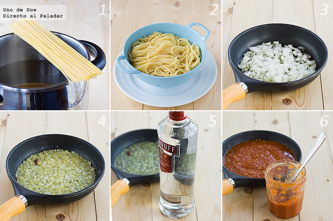

Preparacion spaghettis
- cocer la pasta ponemos en una olla alta abundante agua.
- Cuando comience a hervir echamos un puñadito de sal y cocinamos según las instrucciones del fabricante.
- La escurrimos, la pasamos por el chorro de agua fría, y añadimos unas gotas de aceite de oliva que repartimos bien por todos los espaguetis.
- Reservamos.
Preparacion salsa
- En una sartén con un poco de aceite, sofreímos la cebolla troceada en dados pequeños, hasta que esté dorada.
- Añadimos los tres dientes de ajo picados y la guindilla, y dejamos que se dore todo un poco.
- Echamos el vodka, subimos el fuego y esperamos a que el alcohol se evapore y reduzca.
- Retiramos la guindilla.
- Agregamos la salsa de tomate, bajamos el fuego y dejamos hacer unos 15 minutos.
- Echamos la nata, un poco de queso rallado, y el orégano y la albahaca.
- Dejamos que se cocine un par de minutos y mezclamos con los espaguetis.

·Video tutorial
Index
·Ingredientes
·Presupuesto